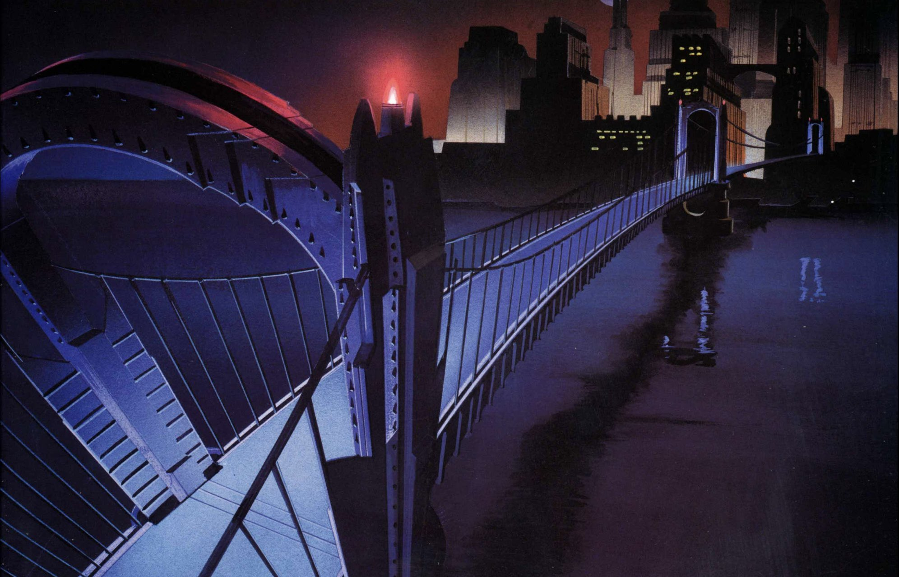

11:47 PM — GOTHAM BRIDGE
The lights go out
Gotham Bridge has gone dark. Cars are stranded, and Gordon reports people trapped near the far end. Then a familiar laugh breaks through your radio. Joker wants you to come alone. His signal is still live, but every minute spent tracing it keeps you away from the bridge.